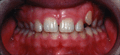
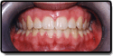
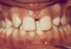
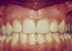

Zatrzymanie zębów może być spowodowane występującą przeszkodą na ich drodze wyrzynania. Inną przyczyną zatrzymania może być przedwczesna utrata zębów mlecznych, stłoczenie zębów, w wyniku czego dochodzi do zmniejszenia miejsca dla danego zęba w łuku zębowym. Najczęściej zatrzymaniu ulegają zęby mądrości (trzecie trzonowce), a także kły oraz przedtrzonowce.
Wada ta powinna być leczona ponieważ może spowodować:
Przed
Po
Leczenie ortodontyczne zatrzymanych zębów:
Leczenie tego typu wad wymaga współpracy ortodontyczno-chirurgicznej dla uzyskania miejsca w łuku dla zęba zatrzymanego oraz jego wprowadzenia.
Zęby brakujące mogą występować w wyniku niewykształcenia danego zęba lub jego urazu.
Wady te powinny być leczone poniewaź mogą spowodować:
Przed
Po
Leczenie ortodontyczne brakujących zębów:
W zależności od sytuacji miejsce po brakującym zębie może zostać zamknięte przez sąsiadujące zęby dzięki zastosowaniu aparatu ortodontycznego lub też może być odtworzone dla sztucznego zęba (implant, most).